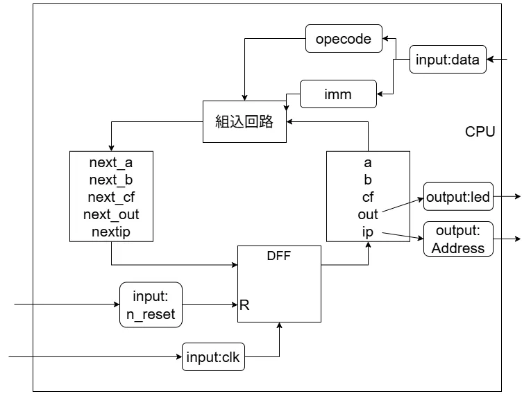
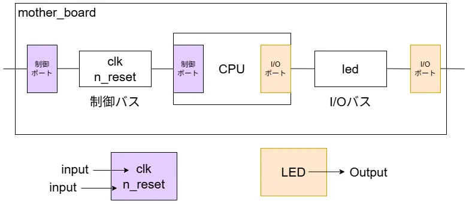
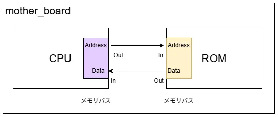
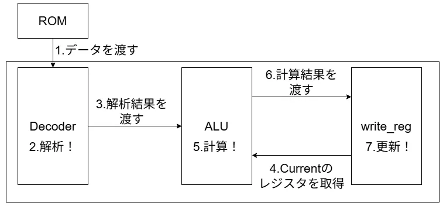

TangNano9kでシンプルなCPUを作ってみる その4: 使いやすいように拡張
今回でSimpleCpuは一旦終了.
前回でTD4ができたので、実際に使いやすくするために拡張を行っていく.
まずは入出力周りが結構ごちゃっとしてる.

この中で特に
- リセットボタン
- クロック
- LED
という部分に着目する.
これはクロックの同期や処理の合わせる制御を司る「制御バス」とキーボードやらディスプレイやらとの接続を司る「I/O」バスの二つがある.
これを実際に図にすると次のような感じ.

制御バスはクロックとボタンというメンバを持っており、両方入力方向.
そのため、このメンバをまずinterfaceで用意.
その後、ポートに関しては入力として定義すればＯＫ.
// 制御用バスのインターフェース
interface ctrl_bus_if();
logic clk; // クロック
logic n_reset; // リセットボタン
// 両方入力として定義
modport master(input clk, input n_reset);
endinterface
I/Oバスについて.
こちらはメンバとしてledのみ.
そして、方向は出力となるように設定すればよい.
今回のLEDは4つなので、4本のワイヤーが必要.
そのため、WIDTHというパラメータで指定できるようにする.
// 入力用バスのインターフェース
// 入力としてビット数をWIDTHとして設定できるように
interface io_bus_if #(parameter WIDTH) ();
logic [WIDTH-1:0] led; // LED
// LEDは出力
modport master(output led);
endinterface
ここまで2つのバスが書けた！
次はバスを適用させていく.
まずはtopにバスを書いて、mother_boardに渡す.
WIDTHは4bit CPUなので、4を指定すればよい.
// 制御用バス
ctrl_bus_if ctrl_bus();
assign ctrl_bus.clk = clk;
assign ctrl_bus.n_reset = pin_n_reset;
// 入力用バス
io_bus_if #(.WIDTH(4)) io_bus();
assign pin_led = io_bus.led;
mother_board mother_board(.ctrl_bus, .io_bus);
いったんここまでで次はメモリバスを見ていく.
メモリバスは単純にCPUとROM側で今まで渡しあってた
- Address
- Data
の二つのメンバのことを表している.
図にすると次のような感じ.

CPUはROMにアドレスを出力,ROMはアドレスを入力として受け取る.
そうしてアドレスにあるデータを出力し、CPUはこれを入力として受け取るという構図だ.
これつまりメンバは同じだけど、方向が真逆というものがものなわけだ.
こういう時はポート側で方向を真逆にした2つを用意すればよい.
今回はこれを「マスター」と「スレイブ」で用意する.
// メモリ用バスのインターフェース
interface mem_bus_if #(parameter ADDR_WIDTH, DATA_WIDTH) ();
logic [ADDR_WIDTH-1:0] address; // アドレス
logic [DATA_WIDTH-1:0] data; // データ
modport master(output address, input data); // マスターポート
modport slave(input address, output data); // スレーブポート
endinterface
さて、そしたらこれをmother_board側に埋め込む.
アドレスは4bit,命令はopecodeで8bitなので、そのように設定.
あとはcpuとromに波及するようにすればOK!!
cpuに関しては制御バスとI/Oバスを入れるのを忘れずに.
// メモリ用バス
mem_bus_if #(.ADDR_WIDTH(4), .DATA_WIDTH(8)) mem_bus();
// モジュールの埋め込み
cpu cpu(.ctrl_bus, .io_bus, .mem_bus);
rom rom(.mem_bus);
そしたらCPUとROMも渡すものを変えちゃおう.
ここで.masterと.slaveで使い分けるだけでOK！
非常に簡単ですね.
module cpu
(
ctrl_bus_if.master ctrl_bus, // 制御用バス
io_bus_if.master io_bus, // 入力用バス
mem_bus_if.master mem_bus // メモリ用バス
);
module rom
(
mem_bus_if.slave mem_bus // メモリ用バス
);
さて、次にやるのはROMを別ファイルに移す対応.
前回までは以下のように直書きしていた.
always_comb begin
case (address) // address data operate
4'b0000: data = 8'b0111_1010; // 0 7A mov B, 10
// ...
これだとプログラムを書く毎にverilogに書いてて、ちょっと気持ち悪い...
そのため、ファイルから読み込むようにする.
ファイルの読み込みは簡単で、まずrom_arrayで読み込み先の配列を用意.
その後、readmemhでファイルを指定して読み込めばOK.
最後にこの配列に対して、アドレスを使ってアクセスすればデータを取得できるわけだ.
logic [7:0] rom_array [16]; // 8bitワイヤーx16本
initial $readmemh("rom_data.mem", rom_array); // romの読み込み
assign mem_bus.data = rom_array[mem_bus.address]; // 繋ぐ
endmodule
書いてみると非常に単純なものだ.
ファイルの中身は次のような感じ.
ここまでくればコンパイラで生成したのをアセンブリにして機械語に...という流れも漠然と見えてくるものである.
今回の最後はCPUの分割を行うことである.
処理の単位で書き換えていくが、次のような部品に分ける.
- Decoder: 命令を機械語として受け取り、解析
- ALU: Decoderの解析結果を見て計算
- Write_reg: 現在のレジスタと次のレジスタを管理
この3つにわけることで、以下のような流れが実現可能になる.

まずROMからデータが流される.
これをDecoderが解析し、結果をALUに渡す.
ALUはWire_regからレジスタの現在の値を取り、計算をする.
計算結果をALUはWrite_regに流して、レジスタを更新する.
これを繰り返すだけだ、流れとしては非常にシンプル.
さて、そしたらまずはレジスタから.
今までのワイヤーを構造体にまとめてしまう.
こういうのはC/C++とか、そういうのと同じようなもんだね.
最初によくあるifdefで定義を行い、パッケージをlib_cpuとしておく.
パッケージはnamespaceに近い感じ.
`ifndef LIB_CPU_SVH
`define LIB_CPU_SVH
package lib_cpu;
typedef struct packed
{
logic [3:0] a, b, ip, out;
logic cf;
} REGS;
endpackage
`endif
REGSというワイヤーをまとめた構造体を作ったわけだけど、使う際は
とすれば使えるわけだ.
面倒な場合はusing namespace std;と似たような感じなものも用意されてる.
今回はwrite_regというモジュールに全部の要素を突っ込む.
これによってlib_cpu::を省略できる.
これで楽ができた！
さて、そしたら実際にこの構造体をcpuに埋め込む.
そして、ALUとwrite_regに流す.
REGS current, next;
assign mem_bus.address = current.ip;
assign io_bus.led = current.out;
alu alu(.opecode, .imm, .current, .next);
write_reg write_reg(.ctrl_bus, .current, .next);
まずwrite_regはシンプル.
currentはALUに出力するのでoutput.
nextはALUの計算結果を格納するのでinput.
あとはクロック毎にcurrentをnextで更新するだけである.
`include "lib_cpu.svh"
module write_reg import lib_cpu :: *;
(
ctrl_bus_if.master ctrl_bus,
output REGS current,
input REGS next
);
// リセットされてなければnextのものを入れる
always_ff @(posedge ctrl_bus.clk) begin
if (~ctrl_bus.n_reset) current <= '0;
else current <= next;
end
endmodule
次にDecoderに行く前にenumで命令をまとめて定義.
これもCとかと同じように書ける.
typedef enum logic [3:0]
{
MOV_A_B, // mov a, b
MOV_B_A, // mov b, a
MOV_A_IMM, // mov a, imm
MOV_B_IMM, // mov b, imm
OUT_B, // out b
OUT_IMM, // out imm
ADD_A_IMM, // add a, imm
ADD_B_IMM, // add b, imm
JMP_IMM, // jmp imm
JNC_IMM, // jnc imm
INVALID // NOP
} OPECODE;
そしたらDecoderを書く.
入力はデータ、ROMから流れてくるもの.
これを命令と即値に分けるので、出力はこの2つである.
`include "lib_cpu.svh"
module decoder import lib_cpu :: *;
(
input logic [7:0] data,
output OPECODE opecode,
output logic[3:0] imm
);
命令は上位4bitで取るようにすればOK.
assign imm = data[3:0];
always_comb begin
unique case (data[7:4])
4'b0000: opecode = ADD_A_IMM; // 0: add A, imm
4'b0101: opecode = ADD_B_IMM; // 5: add B, imm
4'b0011: opecode = MOV_A_IMM; // 3: mov A, imm
4'b0111: opecode = MOV_B_IMM; // 7: mov B, imm
4'b0001: opecode = MOV_A_B; // 1: mov A, B
4'b0100: opecode = MOV_B_A; // 4: mov B, A
4'b1111: opecode = JMP_IMM; // 15: jmp imm
4'b1110: opecode = JNC_IMM; // 14: jnc imm
4'b1001: opecode = OUT_B; // 9: OUT B
4'b1011: opecode = OUT_IMM; // 11: OUT imm
default: opecode = INVALID; // NOP
endcase
end
endmodule
これで図の1,2,3ができたことになる.
最後にALU.
ALUの計算はlib_operationにまとめる.
関数をまとめてるだけ,今回はnopだけ載せるがほかにも色々まとまってる.
`ifndef LIB_OPERATION_SVH
`define LIB_OPERATION_SVH
`include "lib_cpu.svh"
package lib_operation;
import lib_cpu :: REGS;
function automatic REGS nop(REGS regs);
nop = regs;
nop.cf = 1'b0;
nop.ip = regs.ip + 4'd1;
endfunction
// ...
endpackage
`endif
そしたら実際にALUを書いていく.
lib_operationとlib_cpuを導入.
そして、入力はCPUからopecodeとimm.
write_Regからcurrentでレジスタを得る.
こうして現在のレジスタと命令が分かれば計算をして、nextのレジスタを出力するだけとなる.
`include "lib_cpu.svh"
`include "lib_operation.svh"
module alu import lib_cpu :: *, lib_operation :: *;
(
input OPECODE opecode,
input logic[3:0] imm,
input REGS current,
output REGS next
);
current,immを関数に渡して、nextを出力すればOK.
always_comb begin
unique case (opecode)
MOV_A_B: next = mov_a_b(current); // mov A, B
MOV_B_A: next = mov_b_a(current); // mov B, A
MOV_A_IMM: next = mov_a_imm(current, imm); // mov A, imm
MOV_B_IMM: next = mov_b_imm(current, imm); // mov B, imm
OUT_B: next = out_b(current); // out B
OUT_IMM: next = out_imm(current, imm); // out imm
ADD_A_IMM: next = add_a_imm(current, imm); // add A, imm
ADD_B_IMM: next = add_b_imm(current, imm); // add B, imm
JMP_IMM: next = jmp_imm(current, imm); // jmp imm
JNC_IMM: next = jnc_imm(current, imm); // jnc imm
default: next = nop(current); // NOP
endcase
end
endmodule
これで図の5ができたことになる.
つまり、
- CPU: 1,2,3
- write_wire: 4,6,7
- ALU: 5
という風に全部書けた.
後は実際に合成したら終了.
これで今回は終わり！
この後はさらに拡張をしていくことになるけど、どこに着地するかが難しいところではある.